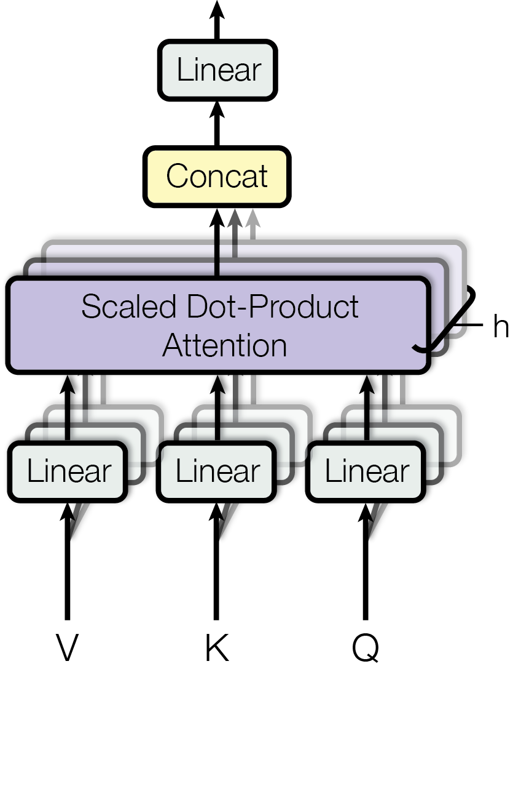

篇首导读
2017 年，Google 的八位作者提出 Transformer：一个完全靠注意力完成序列转换的架构，把循环和卷积都拿掉了。它最初只是为了把机器翻译训练得更快，结果成了此后几乎所有大语言模型的骨架。
对智能体开发者来说，这篇论文解释了三件每天都在打交道的事：上下文窗口为什么是平方成本（每个 token 都要和所有 token 算注意力）、位置信息为什么必须额外注入（注意力本身对顺序无感）、为什么长上下文既贵又会“稀释”注意力。Week 2 第二篇《Transformers are RNNs》会把这里的 O(N²) 一路降到 O(N)，第三篇 Anthropic 的上下文工程则从工程侧回答“窗口里到底该放什么”。
怎么读：先看 Figure 1 建立整体结构，再精读 3.2 的缩放点积注意力和多头注意力；Table 1 是理解“为什么 self-attention 划算”的关键。训练细节（5.2–5.4）可以快速扫过，结果表看 Table 2 即可。
术语卡
完整术语表 →- Transformer Transformer 架构
- 完全基于注意力、由编码器和解码器堆叠而成的序列转换架构；没有循环，也没有卷积。
- Self-Attention 自注意力
- 同一序列内部的位置互相计算注意力：每个位置根据与其他所有位置的相关性，加权汇总它们的表示。
- Scaled Dot-Product Attention 缩放点积注意力
- 用 query 与 key 的点积算相关性，除以 √dk 防止 softmax 进入梯度极小的区域，再加权求和 value。
- Multi-Head Attention 多头注意力
- 把 Q、K、V 投影到多组低维子空间并行做注意力，最后拼接。让模型同时关注不同表示子空间的信息。
- Positional Encoding 位置编码
- 注意力本身不区分顺序，所以要把位置信息加到输入嵌入上。论文用不同频率的正弦、余弦函数。
- Encoder–Decoder 编码器–解码器
- 编码器把输入序列映射成连续表示，解码器再自回归地生成输出；两层之间通过交叉注意力连接。
- Autoregressive 自回归
- 生成第 i 个 token 时，把前面已生成的 token 作为输入；解码器用掩码保证看不到未来的位置。
- BLEU 双语评估替补指标
- 机器翻译常用的 n-gram 匹配指标。分数越高通常越好，但不同数据集、分词方式之间不能直接横比。
摘要与引言
主流的序列转换模型基于复杂的循环或卷积神经网络，包含一个编码器和一个解码器。表现最好的模型还会通过注意力机制连接编码器和解码器。我们提出一种新的简单网络架构——Transformer，它完全基于注意力机制，彻底舍弃了循环和卷积。在两个机器翻译任务上的实验表明，这些模型在质量上更优，同时更可并行化，训练所需时间显著更少。我们的模型在 WMT 2014 英德翻译任务上达到 28.4 BLEU，比现有最佳结果（包括集成模型）高出 2 BLEU 以上。在 WMT 2014 英法翻译任务上，我们的模型在 8 块 GPU 上训练 3.5 天后，建立了新的单模型 SOTA BLEU 41.8，训练成本仅为文献中最佳模型的一小部分。我们还把 Transformer 成功应用于英语成分句法分析，无论训练数据充足还是有限，都表明它能很好地泛化到其他任务。
循环神经网络，尤其是长短期记忆网络（LSTM）和门控循环神经网络，长期是序列建模与转换问题（如语言建模、机器翻译）的 SOTA 方法。此后大量工作继续推进循环语言模型和编码器–解码器架构的边界。
循环模型通常沿输入、输出序列的符号位置分解计算：把位置对齐到计算时间步，根据前一个隐藏状态 ht−1 和位置 t 的输入生成隐藏状态序列 ht。这种固有的顺序性阻止了训练样本内部的并行化；当序列较长时，内存限制又进一步限制了跨样本的批处理，顺序计算成为关键瓶颈。近期工作通过分解技巧和条件计算显著提升了计算效率，但顺序计算的根本约束仍然存在。
注意力机制已经成为各种任务中序列建模与转换模型的重要组成部分，它允许建模输入、输出序列中任意距离的依赖关系。但除了少数情况，这些注意力机制都是与循环网络配合使用的。
在这项工作中，我们提出 Transformer：不再使用循环，而是完全依靠注意力机制来刻画输入与输出之间的全局依赖。Transformer 允许显著更多的并行化，在 8 块 P100 GPU 上训练短短 12 小时，就能在翻译质量上达到新的 SOTA。
查看本节英文原文（节选）
The dominant sequence transduction models are based on complex recurrent or convolutional neural networks that include an encoder and a decoder. The best performing models also connect the encoder and decoder through an attention mechanism. We propose a new simple network architecture, the Transformer, based solely on attention mechanisms, dispensing with recurrence and convolutions entirely. Experiments on two machine translation tasks show these models to be superior in quality while being more parallelizable and requiring significantly less time to train. Our model achieves 28.4 BLEU on the WMT 2014 English-to-German translation task, improving over the existing best results, including ensembles, by over 2 BLEU. On the WMT 2014 English-to-French translation task, our model establishes a new single-model state-of-the-art BLEU score of 41.8 after training for 3.5 days on eight GPUs, a small fraction of the training costs of the best models from the literature.
Recurrent models typically factor computation along the symbol positions of the input and output sequences. Aligning the positions to steps in computation time, they generate a sequence of hidden states ht, as a function of the previous hidden state ht−1 and the input for position t. This inherently sequential nature precludes parallelization within training examples, which becomes critical at longer sequence lengths, as memory constraints limit batching across examples.
In this work we propose the Transformer, a model architecture eschewing recurrence and instead relying entirely on an attention mechanism to draw global dependencies between input and output. The Transformer allows for significantly more parallelization and can reach a new state of the art in translation quality after being trained for as little as twelve hours on eight P100 GPUs.
背景
减少顺序计算也是 Extended Neural GPU、ByteNet 和 ConvS2S 的共同目标。它们都用卷积神经网络作为基本构件，为所有输入、输出位置并行计算隐藏表示。在这些模型中，关联任意两个位置所需的操作数会随位置距离增长：ConvS2S 是线性增长，ByteNet 是对数增长。这让学习远距离依赖变得更困难。在 Transformer 中，这个操作数被降到了常数——代价是注意力加权平均会降低有效分辨率，而第 3.2 节的多头注意力正是用来抵消这个效果的。
自注意力（有时称为内部注意力）是一种把同一序列中不同位置关联起来、以计算该序列表示的注意力机制。自注意力已成功用于阅读理解、抽象摘要、文本蕴含和学习任务无关的句子表示等多种任务。
端到端记忆网络基于循环注意力机制，而不是序列对齐的循环，在简单语言问答和语言建模任务上表现良好。但据我们所知，Transformer 是第一个完全依靠自注意力来计算输入、输出表示、不使用序列对齐 RNN 或卷积的转换模型。
查看本节英文原文（节选）
The goal of reducing sequential computation also forms the foundation of the Extended Neural GPU, ByteNet and ConvS2S, all of which use convolutional neural networks as basic building block, computing hidden representations in parallel for all input and output positions. In these models, the number of operations required to relate signals from two arbitrary input or output positions grows in the distance between positions, linearly for ConvS2S and logarithmically for ByteNet. This makes it more difficult to learn dependencies between distant positions. In the Transformer this is reduced to a constant number of operations, albeit at the cost of reduced effective resolution due to averaging attention-weighted positions, an effect we counteract with Multi-Head Attention as described in section 3.2.
Self-attention, sometimes called intra-attention is an attention mechanism relating different positions of a single sequence in order to compute a representation of the sequence. Self-attention has been used successfully in a variety of tasks including reading comprehension, abstractive summarization, textual entailment and learning task-independent sentence representations.
To the best of our knowledge, however, the Transformer is the first transduction model relying entirely on self-attention to compute representations of its input and output without using sequence-aligned RNNs or convolution.
模型架构
大多数有竞争力的神经序列转换模型都采用编码器–解码器结构。编码器把输入序列 (x1, …, xn) 映射成连续表示序列 z = (z1, …, zn)；给定 z，解码器再逐个生成输出序列 (y1, …, ym)。每一步模型都是自回归的：生成下一个符号时，把之前生成的符号作为额外输入。
Transformer 沿用这个整体架构，但编码器和解码器都由堆叠的自注意力和逐位置全连接层构成，分别对应 Figure 1 的左半和右半。

编码器与解码器堆叠
编码器由 N = 6 个相同的层堆叠而成。每层有两个子层：第一层是多头自注意力，第二层是简单的逐位置全连接前馈网络。每个子层外面都套一个残差连接，再接层归一化。也就是说，每个子层的输出是 LayerNorm(x + Sublayer(x))，其中 Sublayer(x) 是该子层实现的函数。为了让残差连接可行，模型里所有子层以及嵌入层的输出维度都是 dmodel = 512。
解码器同样由 N = 6 个相同的层堆叠而成。除了编码器每层已有的两个子层，解码器还插入第三个子层：对编码器堆叠的输出做多头注意力。与编码器类似，每个子层外面也有残差连接和层归一化。我们还会修改解码器的自注意力子层，阻止某个位置关注它之后的位置。这种掩码加上输出嵌入偏移一个位置，保证了位置 i 的预测只能依赖小于 i 的已知输出。
查看本节英文原文（节选）
Most competitive neural sequence transduction models have an encoder-decoder structure. Here, the encoder maps an input sequence of symbol representations (x1,...,xn) to a sequence of continuous representations z = (z1,...,zn). Given z, the decoder then generates an output sequence (y1,...,ym) of symbols one element at a time. At each step the model is auto-regressive, consuming the previously generated symbols as additional input when generating the next.
The encoder is composed of a stack of N = 6 identical layers. Each layer has two sub-layers. The first is a multi-head self-attention mechanism, and the second is a simple, position-wise fully connected feed-forward network. We employ a residual connection around each of the two sub-layers, followed by layer normalization. That is, the output of each sub-layer is LayerNorm(x + Sublayer(x)), where Sublayer(x) is the function implemented by the sub-layer itself.
The decoder is also composed of a stack of N = 6 identical layers. In addition to the two sub-layers in each encoder layer, the decoder inserts a third sub-layer, which performs multi-head attention over the output of the encoder stack. We also modify the self-attention sub-layer in the decoder stack to prevent positions from attending to subsequent positions.
注意力机制
注意力函数可以描述为：把一个 query 和一组 key–value 对映射成一个输出，其中 query、key、value 和输出都是向量。输出是 value 的加权和，每个 value 的权重由 query 与对应 key 的相容性函数计算。
缩放点积注意力
我们把这种注意力称为“缩放点积注意力”（Figure 2 左）。输入是维度为 dk 的 query 和 key，以及维度为 dv 的 value。我们计算 query 与所有 key 的点积，每个点积除以 √dk，再用 softmax 得到 value 上的权重。
实践中，我们把一组 query 打包成矩阵 Q，同时计算注意力；key 和 value 也分别打包成矩阵 K 和 V。输出矩阵为：
最常用的两种注意力是加性注意力和点积（乘性）注意力。点积注意力与我们的算法相同，只差一个 1/√dk 的缩放因子。加性注意力用单隐藏层前馈网络计算相容性。两者理论复杂度相近，但点积注意力在实践中快得多、也更省空间，因为它可以用高度优化的矩阵乘法实现。
当 dk 较小时，两种机制表现相近；但当 dk 较大时，不缩放的加性注意力反而优于点积注意力。我们怀疑，dk 很大时点积的幅度会变大，把 softmax 推到梯度极小的区域。为了抵消这个效果，我们把点积乘以 1/√dk。


多头注意力
与其用 dmodel 维的 key、value、query 做单个注意力函数，我们发现用不同的可学习线性投影把 Q、K、V 分别投影 h 次到 dk、dk、dv 维会更有效。在每组投影后的 Q、K、V 上并行执行注意力，得到 dv 维输出；把这些输出拼接起来，再做一次投影，得到最终结果（Figure 2 右）。
多头注意力让模型可以同时关注不同位置、不同表示子空间的信息。如果只有一个注意力头，平均化会抑制这种能力。
其中 headi = Attention(QWQi, KWKi, VWVi)
投影矩阵为 WQi ∈ ℝdmodel×dk、WKi ∈ ℝdmodel×dk、WVi ∈ ℝdmodel×dv，以及 WO ∈ ℝhdv×dmodel。
本工作中我们使用 h = 8 个并行注意力层（头）。每个头取 dk = dv = dmodel/h = 64。由于每个头的维度降低，总计算成本与全维度的单头注意力相近。
注意力在本模型中的三种用法
- 编码器–解码器注意力：query 来自前一个解码器层，key 和 value 来自编码器输出。这允许解码器的每个位置关注输入序列的所有位置，类似经典的序列到序列编码器–解码器注意力。
- 编码器自注意力：所有 key、value、query 都来自同一处，即编码器上一层的输出。编码器的每个位置可以关注上一层所有位置。
- 解码器自注意力：允许每个位置关注解码器中直到该位置（含）的所有位置。为了保持自回归性质，必须阻止向左的信息流；我们在缩放点积注意力内部，把 softmax 输入中所有非法连接置为 −∞ 来实现掩码。
查看本节英文原文（节选）
An attention function can be described as mapping a query and a set of key-value pairs to an output, where the query, keys, values, and output are all vectors. The output is computed as a weighted sum of the values, where the weight assigned to each value is computed by a compatibility function of the query with the corresponding key.
We call our particular attention "Scaled Dot-Product Attention" (Figure 2). The input consists of queries and keys of dimension dk, and values of dimension dv. We compute the dot products of the query with all keys, divide each by √dk, and apply a softmax function to obtain the weights on the values.
Instead of performing a single attention function with dmodel-dimensional keys, values and queries, we found it beneficial to linearly project the queries, keys and values h times with different, learned linear projections to dk, dk and dv dimensions, respectively. On each of these projected versions of queries, keys and values we then perform the attention function in parallel, yielding dv-dimensional output values. These are concatenated and once again projected, resulting in the final values.
Multi-head attention allows the model to jointly attend to information from different representation subspaces at different positions. With a single attention head, averaging inhibits this.
逐位置前馈网络
除了注意力子层，编码器和解码器的每一层还包含一个全连接前馈网络，对每个位置分别、相同地应用。它由两个线性变换组成，中间夹一个 ReLU 激活：
虽然不同位置上的线性变换相同，但不同层使用不同参数。也可以把它描述为两个卷积核大小为 1 的卷积。输入、输出维度为 dmodel = 512，内层维度为 dff = 2048。
嵌入与 Softmax
与其他序列转换模型类似，我们用可学习的嵌入把输入 token 和输出 token 转换成 dmodel 维向量。解码器输出再经过常规的可学习线性变换和 softmax，转换成下一个 token 的预测概率。我们的模型在两个嵌入层和 softmax 前的线性变换之间共享同一个权重矩阵，类似此前的工作。在嵌入层中，这些权重会乘以 √dmodel。
位置编码
由于模型既没有循环也没有卷积，为了让模型利用序列顺序，我们必须注入一些关于 token 相对或绝对位置的信息。为此，我们在编码器和解码器堆叠底部的输入嵌入上加上“位置编码”。位置编码与嵌入维度相同，都是 dmodel，因此可以直接相加。位置编码可以是学习的，也可以是固定的，有很多选择。
本工作中，我们使用不同频率的正弦和余弦函数：
PE(pos, 2i+1) = cos( pos / 100002i/dmodel )
其中 pos 是位置，i 是维度。也就是说，位置编码的每个维度对应一条正弦曲线，波长构成从 2π 到 10000·2π 的几何级数。我们选择这个函数，是因为猜测它能让模型容易地学到按相对位置关注：对于任意固定偏移 k，PEpos+k 都可以表示为 PEpos 的线性函数。
我们也实验了可学习的位置嵌入，发现两个版本结果几乎相同（见 Table 3 的 (E) 行）。我们选择正弦版本，因为它可能让模型外推到比训练时更长的序列。
查看本节英文原文（节选）
In addition to attention sub-layers, each of the layers in our encoder and decoder contains a fully connected feed-forward network, which is applied to each position separately and identically. This consists of two linear transformations with a ReLU activation in between.
Since our model contains no recurrence and no convolution, in order for the model to make use of the order of the sequence, we must inject some information about the relative or absolute position of the tokens in the sequence. To this end, we add "positional encodings" to the input embeddings at the bottoms of the encoder and decoder stacks.
In this work, we use sine and cosine functions of different frequencies. We chose this function because we hypothesized it would allow the model to easily learn to attend by relative positions, since for any fixed offset k, PEpos+k can be represented as a linear function of PEpos.
为什么用自注意力
本节从三个角度比较自注意力层与常用的循环层、卷积层：每层的总计算复杂度、可并行化的计算量（用所需的最少顺序操作数衡量）、以及网络中长距离依赖的路径长度。学习长距离依赖是许多序列转换任务的关键挑战；前向、后向信号在网络中经过的路径越短，越容易学习这种依赖。
| 层类型 | 每层复杂度 | 顺序操作数 | 最大路径长度 |
|---|---|---|---|
| 自注意力 | O(n² · d) | O(1) | O(1) |
| 循环 | O(n · d²) | O(n) | O(n) |
| 卷积 | O(k · n · d²) | O(1) | O(logk(n)) |
| 自注意力（受限） | O(r · n · d) | O(1) | O(n/r) |
表 1（原论文 Table 1）：n 是序列长度，d 是表示维度，k 是卷积核大小，r 是受限自注意力的邻域大小。
如 Table 1 所示，自注意力层用常数个顺序操作连接所有位置，而循环层需要 O(n) 个顺序操作。在计算复杂度上，当序列长度 n 小于表示维度 d 时，自注意力层比循环层更快——机器翻译中 SOTA 模型常用的 word-piece、byte-pair 表示通常正是这种情况。对于很长的序列，可以把自注意力限制为只考虑以输出位置为中心、大小为 r 的邻域，这会把最大路径长度增加到 O(n/r)。
核宽度 k < n 的单个卷积层无法连接所有输入、输出位置对。要做到这一点，连续卷积需要堆叠 O(n/k) 层，膨胀卷积需要 O(logk(n)) 层，这会增加任意两个位置之间最长路径的长度。卷积层通常比循环层贵 k 倍；但可分离卷积能把复杂度显著降到 O(k · n · d + n · d²)。即使 k = n，可分离卷积的复杂度也等于“自注意力层 + 逐位置前馈层”的组合，也就是我们模型采用的方式。
作为附带好处，自注意力可能带来更可解释的模型。我们检查了模型中的注意力分布，并在附录中给出例子：单个注意力头明显学会了执行不同任务，许多头表现出与句子句法、语义结构相关的行为。
查看本节英文原文（节选）
In this section we compare various aspects of self-attention layers to the recurrent and convolutional layers commonly used for mapping one variable-length sequence of symbol representations (x1,...,xn) to another sequence of equal length (z1,...,zn), such as a hidden layer in a typical sequence transduction encoder or decoder. Motivating our use of self-attention we consider three desiderata. One is the total computational complexity per layer. Another is the amount of computation that can be parallelized, as measured by the minimum number of sequential operations required. The third is the path length between long-range dependencies in the network.
As noted in Table 1, a self-attention layer connects all positions with a constant number of sequentially executed operations, whereas a recurrent layer requires O(n) sequential operations. In terms of computational complexity, self-attention layers are faster than recurrent layers when the sequence length n is smaller than the representation dimensionality d, which is most often the case with sentence representations used by state-of-the-art models in machine translations.
As side benefit, self-attention could yield more interpretable models. We inspect attention distributions from our models and present and discuss examples in the appendix.
训练
训练数据与批处理
我们在标准的 WMT 2014 英德数据集上训练，约 450 万句对。句子用 byte-pair 编码，源语言和目标语言共享约 37,000 个 token 的词表。英法任务使用大得多的 WMT 2014 英法数据集，包含 3600 万句，token 被拆成 32,000 个 word-piece 词表。句对按近似序列长度分批，每个训练批次包含约 25,000 个源 token 和 25,000 个目标 token。
硬件与时间
我们在一台装有 8 块 NVIDIA P100 GPU 的机器上训练。基础模型每个训练步约 0.4 秒，共训练 100,000 步（12 小时）。大模型每步 1.0 秒，训练 300,000 步（3.5 天）。
优化器
我们使用 Adam 优化器，β1 = 0.9、β2 = 0.98、ε = 10−9。学习率按以下公式随训练过程变化：
这相当于在前 warmup_steps 步线性增加学习率，之后按步数的平方根倒数递减。我们取 warmup_steps = 4000。
正则化
训练中使用三种正则化。第一，对每个子层的输出施加 dropout，然后再与子层输入相加并归一化。第二，对编码器和解码器中“嵌入 + 位置编码”的和施加 dropout。基础模型的 dropout 率为 Pdrop = 0.1。第三，使用值为 εls = 0.1 的标签平滑；这会损害困惑度（模型学会更不确定），但能提升准确率和 BLEU。
| 模型 | BLEU（英德） | BLEU（英法） | 训练成本（FLOPs，英德） |
|---|---|---|---|
| ByteNet | 23.75 | — | — |
| Deep-Att + PosUnk | — | 39.2 | 1.0 × 1020 |
| GNMT + RL | 24.6 | 39.92 | 2.3 × 1019 |
| ConvS2S | 25.16 | 40.46 | 9.6 × 1018 |
| MoE | 26.03 | 40.56 | 2.0 × 1019 |
| GNMT + RL 集成 | 26.30 | 41.16 | 1.8 × 1020 |
| ConvS2S 集成 | 26.36 | 41.29 | 7.7 × 1019 |
| Transformer（base） | 27.3 | 38.1 | 3.3 × 1018 |
| Transformer（big） | 28.4 | 41.8 | 2.3 × 1019 |
表 2（原论文 Table 2）：Transformer 在英德、英法 newstest2014 上以远低于此前模型的训练成本取得更好的 BLEU。加粗为本文提出的 Transformer 模型。
查看本节英文原文（节选）
We trained on the standard WMT 2014 English-German dataset consisting of about 4.5 million sentence pairs. Sentences were encoded using byte-pair encoding, which has a shared source-target vocabulary of about 37000 tokens. For English-French, we used the significantly larger WMT 2014 English-French dataset consisting of 36M sentences and split tokens into a 32000 word-piece vocabulary.
We used the Adam optimizer with β1 = 0.9, β2 = 0.98 and ε = 10−9. We varied the learning rate over the course of training, according to the formula: lrate = dmodel−0.5 · min(step_num−0.5, step_num · warmup_steps−1.5). This corresponds to increasing the learning rate linearly for the first warmup_steps training steps, and decreasing it thereafter proportionally to the inverse square root of the step number.
We employ three types of regularization during training: residual dropout, label smoothing of value εls = 0.1, and dropout on the sums of the embeddings and the positional encodings.
结果
机器翻译
在 WMT 2014 英德翻译任务上，大 Transformer 模型（Table 2 中的 Transformer (big)）比此前报告的最佳模型（包括集成模型）高出 2.0 BLEU 以上，达到新的 SOTA 28.4。该模型配置列在 Table 3 最后一行，在 8 块 P100 GPU 上训练了 3.5 天。即使是基础模型，也以远低于所有竞争模型的训练成本超过了此前发表的所有模型和集成模型。
在 WMT 2014 英法翻译任务上，大模型达到 BLEU 41.0，超过此前发表的所有单模型，训练成本不到此前 SOTA 模型的 1/4。用于英法的大模型 dropout 率是 0.1，而不是 0.3。（原文正文写 41.0，摘要与表 2 写 41.8；这是原论文自身的不一致，此处保留。）
基础模型使用最后 5 个检查点的平均；大模型平均最后 20 个检查点。推理使用 beam search，beam 大小为 4，长度惩罚 α = 0.6。这些超参数是在开发集上实验后选定的。推理时最大输出长度设为输入长度 + 50，但能提前终止时就提前终止。
模型变体
为了评估 Transformer 各组件的重要性，我们在英德开发集 newstest2013 上改变基础模型的配置，测量性能变化。Table 3 汇总了结果。总体结论是：单头注意力比最佳设置差 0.9 BLEU，头太多也会掉点；减小注意力 key 的维度 dk 会损害质量，说明相容性函数不宜太简单；更大的模型更好，dropout 对防止过拟合很有帮助；用可学习位置嵌入替换正弦编码，结果几乎相同。
| 配置 | 关键设置 | PPL（开发集） | BLEU（开发集） | 参数量（×106） |
|---|---|---|---|---|
| base | N=6, dmodel=512, dff=2048, h=8, dk=dv=64, Pdrop=0.1 | 4.92 | 25.8 | 65 |
| (A) 单头 | h=1 | 5.29 | 24.9 | — |
| (A) 头过多 | h=32, dk=dv=16 | 5.01 | 25.4 | — |
| (B) 减小 dk | dk=16 | 5.16 | 25.1 | 58 |
| (C) 更大模型 | dmodel=1024, dff=4096 | 4.75 | 26.2 | 90 |
| (D) 无 dropout | Pdrop=0.0 | 5.77 | 24.6 | — |
| (E) 可学习位置嵌入 | 替换正弦编码 | 4.92 | 25.7 | — |
| big | N=6, dmodel=1024, dff=4096, h=16, Pdrop=0.3 | 4.33 | 26.4 | 213 |
表 3（原论文 Table 3 的节选）：未列出的值与 base 相同。困惑度按 word-piece 计算，不能与按词计算的困惑度直接比较。加粗为 big 配置。
英语成分句法分析
为了评估 Transformer 能否泛化到其他任务，我们在英语成分句法分析上做实验。这个任务有特殊挑战：输出受强结构约束，而且比输入长得多；此外，RNN 序列到序列模型在小数据场景下一直无法达到 SOTA。
我们在 Penn Treebank 的 Wall Street Journal 部分（约 40K 训练句）训练了一个 4 层 Transformer，dmodel = 1024。我们还做了半监督设置，使用更大的 high-confidence 和 BerkeleyParser 语料（约 1700 万句）。WSJ-only 设置使用 16K 词表，半监督设置使用 32K 词表。
我们只在 Section 22 开发集上做了少量实验来选择 dropout、学习率和 beam 大小，其余参数与英德基础翻译模型相同。推理时最大输出长度增加到输入长度 + 300，beam 大小为 21，α = 0.3。Table 4 显示，尽管没有针对任务调参，模型表现仍然出奇地好，除了 Recurrent Neural Network Grammar 之外，超过了此前报告的所有模型。
| 解析器 | 训练设置 | WSJ 23 F1 |
|---|---|---|
| Vinyals & Kaiser et al. (2014) | 仅 WSJ，判别式 | 88.3 |
| Petrov et al. (2006) | 仅 WSJ，判别式 | 90.4 |
| Dyer et al. (2016) | 仅 WSJ，判别式 | 91.7 |
| Transformer（4 层） | 仅 WSJ，判别式 | 91.3 |
| McClosky et al. (2006) | 半监督 | 92.1 |
| Transformer（4 层） | 半监督 | 92.7 |
| Luong et al. (2015) | 多任务 | 93.0 |
| Dyer et al. (2016) | 生成式 | 93.3 |
表 4（原论文 Table 4）：Transformer 在英语成分句法分析上的泛化结果（WSJ Section 23）。加粗为 Transformer 行。
查看本节英文原文（节选）
On the WMT 2014 English-to-German translation task, the big transformer model outperforms the best previously reported models (including ensembles) by more than 2.0 BLEU, establishing a new state-of-the-art BLEU score of 28.4. The configuration of this model is listed in the bottom line of Table 3. Training took 3.5 days on 8 P100 GPUs.
To evaluate the importance of different components of the Transformer, we varied our base model in different ways, measuring the change in performance on English-to-German translation on the development set, newstest2013. While single-head attention is 0.9 BLEU worse than the best setting, quality also drops off with too many heads. Reducing the attention key size dk hurts model quality. This suggests that determining compatibility is not easy and that a more sophisticated compatibility function than dot product may be beneficial.
To evaluate if the Transformer can generalize to other tasks we performed experiments on English constituency parsing. Our results in Table 4 show that despite the lack of task-specific tuning our model performs surprisingly well, yielding better results than all previously reported models with the exception of the Recurrent Neural Network Grammar.
结论
在这项工作中，我们提出了 Transformer，这是第一个完全基于注意力的序列转换模型，用多头自注意力取代了编码器–解码器架构中最常用的循环层。
对于翻译任务，Transformer 的训练速度可以显著快于基于循环或卷积层的架构。在 WMT 2014 英德和英法翻译任务上，我们都达到了新的 SOTA；在英德任务上，最佳模型甚至超过了此前报告的所有集成模型。
我们对基于注意力的模型的未来感到兴奋，并计划把它们应用到其他任务。我们计划把 Transformer 扩展到文本以外的输入、输出模态，并研究局部、受限的注意力机制，以高效处理图像、音频、视频等大规模输入输出。让生成过程更少顺序性，也是我们的另一个研究目标。
我们用于训练和评估模型的代码已开源于 tensor2tensor。
查看本节英文原文
In this work, we presented the Transformer, the first sequence transduction model based entirely on attention, replacing the recurrent layers most commonly used in encoder-decoder architectures with multi-headed self-attention.
For translation tasks, the Transformer can be trained significantly faster than architectures based on recurrent or convolutional layers. On both WMT 2014 English-to-German and WMT 2014 English-to-French translation tasks, we achieve a new state of the art. In the former task our best model outperforms even all previously reported ensembles.
We are excited about the future of attention-based models and plan to apply them to other tasks. We plan to extend the Transformer to problems involving input and output modalities other than text and to investigate local, restricted attention mechanisms to efficiently handle large inputs and outputs such as images, audio and video. Making generation less sequential is another research goals of ours.
附录：注意力可视化
论文附录用多张图展示注意力头的行为，核心结论是：不同的头确实学会了不同的任务，很多头的行为与句子的句法、语义结构相关。
- Figure 3：编码器第 5 层的一个例子，许多头关注动词 “making” 的远距离依赖，补全 “making … more difficult” 这一短语；图中只展示 “making” 这个词的注意力，不同颜色代表不同的头。
- Figure 4：同一层中两个似乎负责指代消解的头。上图是 head 5 的完整注意力；下图是 “its” 这个词在 head 5、head 6 中的孤立注意力。对这个词，注意力非常集中。
- Figure 5：两个头的行为似乎与句子结构有关。作者认为，这些头明显学会了执行不同任务。
这些可视化是“注意力可解释性”的早期证据，但要注意：注意力权重高不等于因果重要，后续研究对此有不少争论。读这类图时，把它当作“模型在看哪里”的线索，而不是完整的解释。
要点回顾
- Transformer 完全用注意力替代循环和卷积，训练可高度并行，是今天 LLM 的共同骨架。
- 缩放点积注意力：softmax(QKT/√dk)V；缩放是为了防止大维度下点积过大、softmax 梯度消失。
- 多头注意力让模型在不同表示子空间、不同位置同时建立关系；h=8、每头 64 维时总成本与全维单头相近。
- 自注意力每层 O(n²·d)，但顺序操作数是 O(1)、最大路径长度是 O(1)；序列长度小于表示维度时比 RNN 更划算。
- 没有循环和卷积，就必须加位置编码；正弦编码让模型可能外推到更长序列。
- 解码器用掩码保证自回归性：位置 i 只能看到 ≤ i 的位置。
- 对智能体开发者：上下文窗口的平方成本、长上下文注意力稀释、位置外推问题，都源自这篇论文的结构选择。